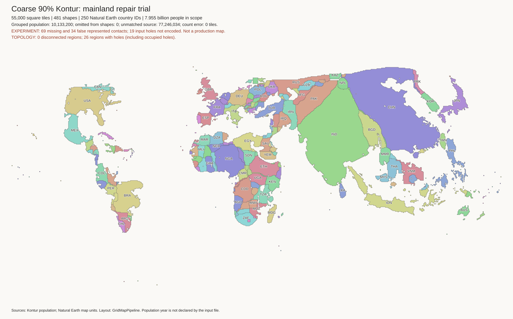
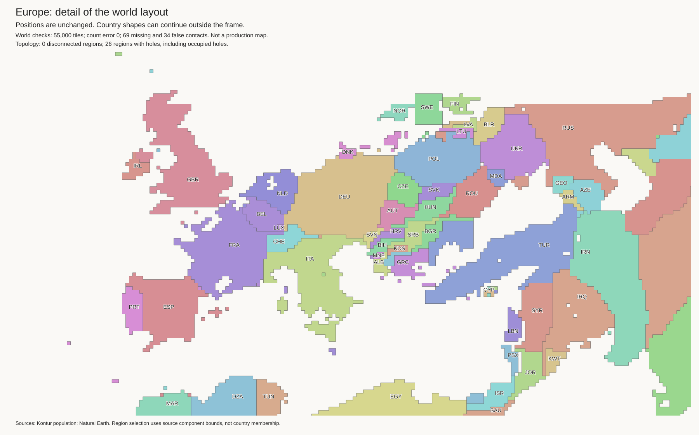
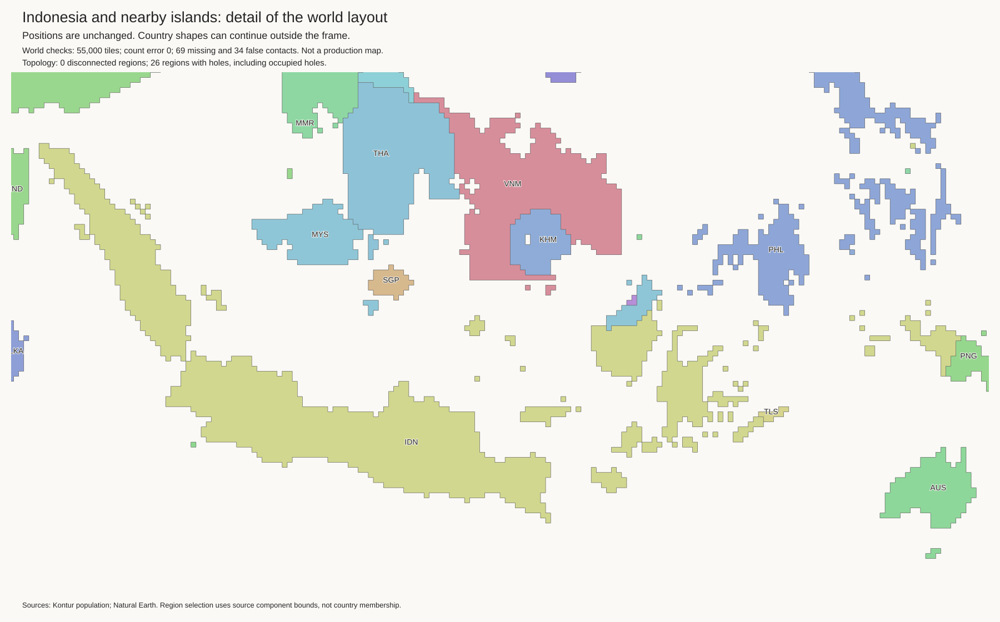
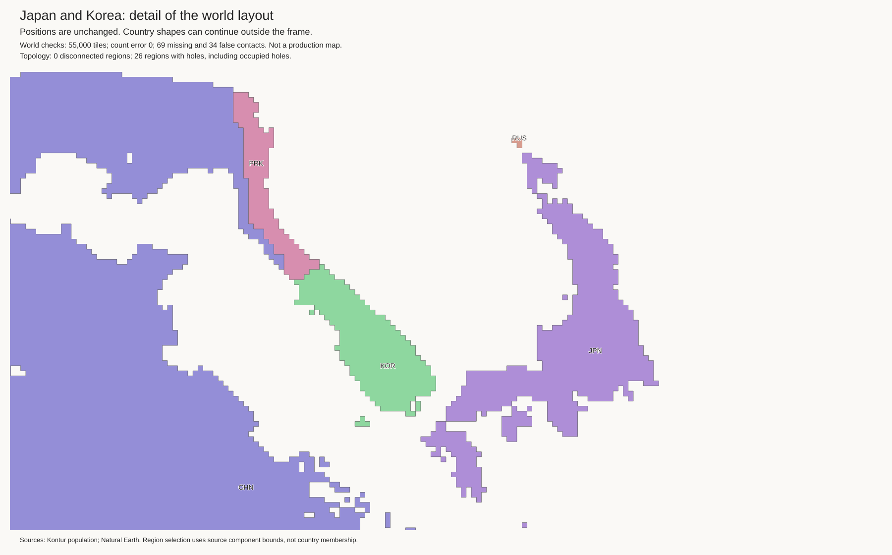
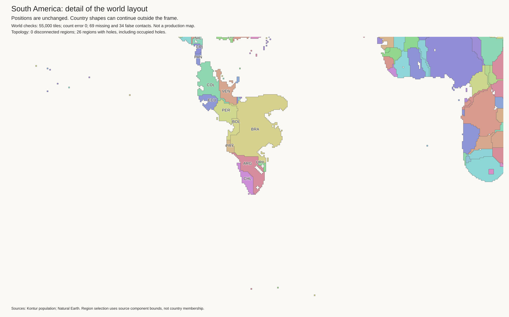
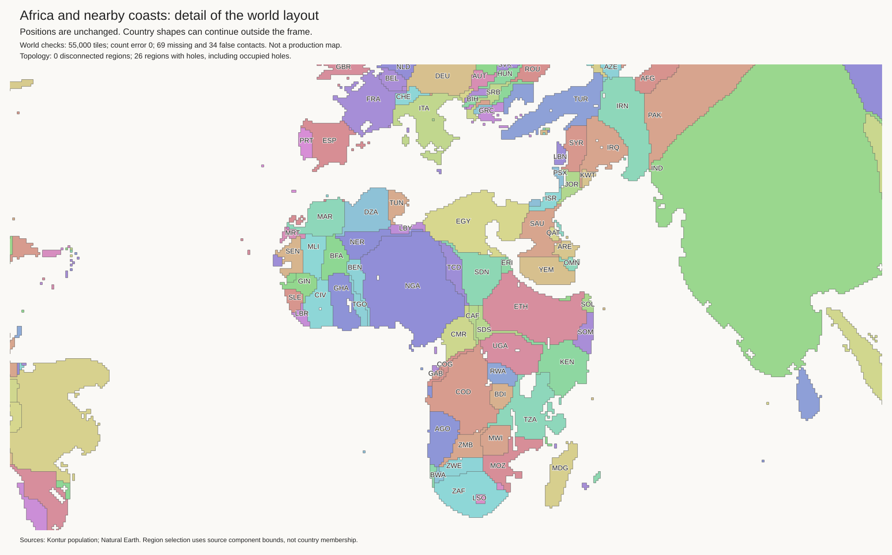

Research candidate. The current best and H3-MON data are unchanged. No strategic cuts.
All 55,000 tiles retain exact component budgets. All 481 components are connected. The 45 lakes use 220 empty cells. Lake shore checks pass.
| Check | Current best | Candidate |
|---|---|---|
| Malaysia touches Thailand | False | True |
| Sweden touches Germany | True | False |
| Lithuania exterior-water edges | 0 | 2 |
| Paraguay exterior-water edges | 16 | 16 |
There are 69 missing and 34 false contacts. The current best has 73 and 48. The candidate gains 5 true contacts and loses 1. It removes 14 false contacts and adds 0. These totals do not prove correct geography.
Open issues include Paraguay's false coast, the missing Finland–Norway border, the Nordic shapes, and missing mainland connections. A coast can be mathematically valid but visually poor. Do not use this as a production map.
Checks and exact contact changes · Land tiles · Empty lake cells · Geographic audit





